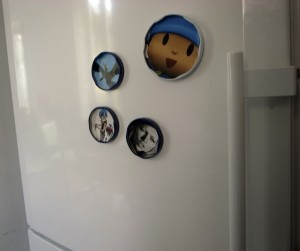

Facebook
Pinterest
Instagram
ES
EN
DE
☰ Menú
Inicio
La casa
Accesorios
Decorar
Instrucciones
Ilustración
Cantimploras personalizadas
Cuaderno de manualidades y actividades 01
App Not Online Anymore
Blog
Fiestas
Navidad
Pascua
Halloween
Carnaval y disfraces
San Valentín
Cumpleaños
Día de la Madre/Padre
Vuelta al cole
Estaciones
Primavera
Verano
Otoño
Invierno
Qué hacer
Juguetes
Juegos
Imprimibles
Recetas y comida
Decoración
Pintar
Experimentos
Al aire libre
Aprender
Animales
Regalos y joyas
Construir y trucos
Otras manualidades
Material
Papel
Cartón
Rollos de papel
Reciclaje
Piedras
Hojas y naturaleza
Tela, coser y tejer
Inicio
›
Blog
›
decoración
decoración
Etiqueta
Comida
Mermelada
Papel
Ventanas
Material
Piedras 02
Origami
Servilletas
Ocasión
Corazones
Actividad
Cera
Navidad
Oro
Nuéz
Duendes
Ocasión
Bolsita de corazón
Actividad
Imanes

Nuéz
Color del otoño
Actividad
Decoración ventana 01
Piedras
Piedras 01
Material
Pez 01
← Más recientes
Página 3 / 3